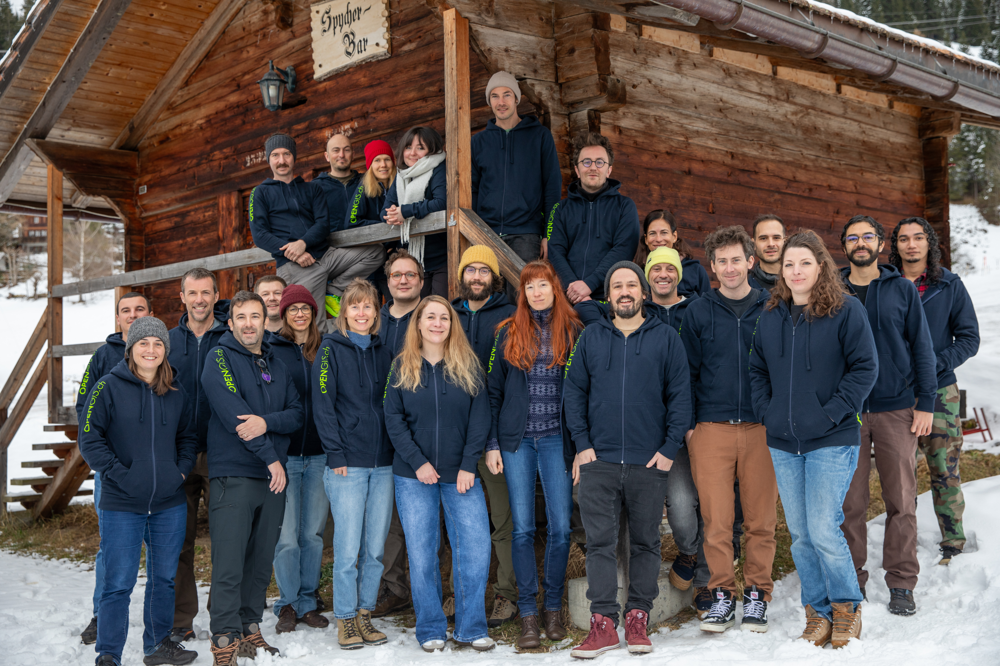
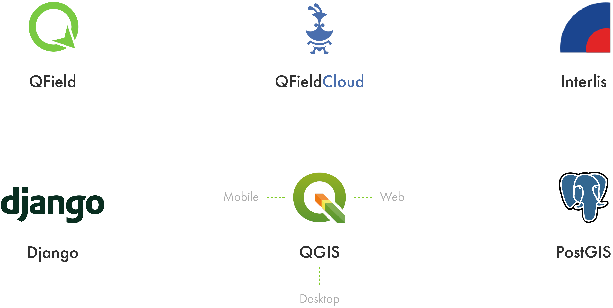
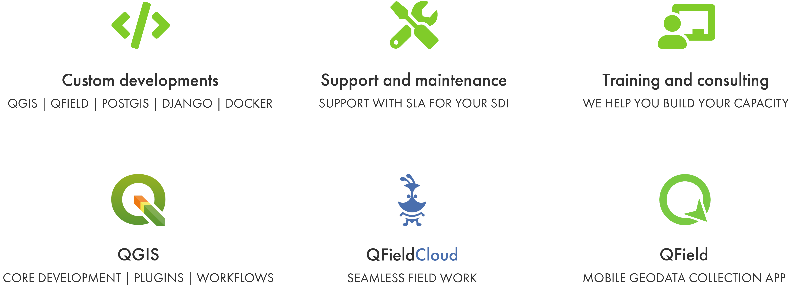

OPEN SOURCE
GEONINJAS
MADE IN
SWITZERLAND
we l[i|o]ve open source.
COURS
AVANCÉ

QUI SOMMES-NOUS?

CE QUE NOUS FAISONS – AUTOUR DE QGIS

CE QUE NOUS FAISONS – QGIS EN GÉNÉRAL

QUI ÊTES-VOUS? 🫵
LES OBJECTIFS DU COURS
- À propos de QGIS
- Extensions pratiques
- Intégration de différents formats de données dans le projet (Geopackage, PostGIS, csv, cartes de base sélectionnées comme WMS, WMTS, tuiles vectorielles, …)
- Expressions: structure et exemples d’application
- Analyses attributaires
- Gestion de bases de données avec SQL
- Configuration du formulaire d’attributs
- Relations et associations
LES OBJECTIFS DU COURS
- Symbolisation et étiquetage
- Édition efficace des attributs (formulaire de saisie, table attributaire)
- Configuration de QGIS, utilisation des profils utilisateurs
- Import INTERLIS avec l’extension Modelbaker
- Création de workflows avec les outils de traitement et la modélisation graphique
- Numérisation avancée – Géométries, topologie
- Création de mise en page d’impression (y compris création d’atlas, intégration de photos)
NOTRE PROGRAMME
- 9:00 – 👩🏫 QGIS
- 10:50 – ☕ Pause
- 11:20 – 👩🏫 QGIS
- 12:30 – 🍜 Repas de midi
- 13:30 – 👩🏫 QGIS
- 15:15 – ☕️ Pause
- 16:45 – 👩🏻💻 Pratique
- 17:00 – 💪🏼 Fini!
À PROPOS DE QGIS
- SIG Desktop Open source
- Tourne sur Linux, Unix, Mac OSX, Windows et Android
- Supporte de nombreux formats vectoriel, raster et des bases de données et nombreuses fonctionnalités
À PROPOS DE QGIS
- QGIS est un logiciel libre et open source
- QGIS peut être utilisé sans restriction aussi souvent que souhaité
- Le produit est remplacé par le projet
- Toutes les modifications peuvent être faites, mais doivent être rendues accessibles si des projets/produits dérivés sont vendus
À PROPOS DE QGIS – LA COMMUNAUTÉ
À PROPOS DE QGIS – CONTRIBUER
- Développement code
- Rapport sur les bugs
- Correction des bugs
- Contribution à la documentation
- Soutien financier
- Le bouche-à-oreille
- S’engager!

À PROPOS DE QGIS – FONCTIONNALITÉS PRINCIPALES
- Visualiser et symboliser les données
- Saisir et éditer des données
- Créer des cartes
- Importer/exporter des données
- Analyser des données
À PROPOS DE QGIS – FONCTIONNALITÉS PRINCIPALES
- Imprimer et publier des cartes sur internet
- Fonctionnalités QGIS avancées
- Extensions principales
- Extensions Python externes
- Console Python